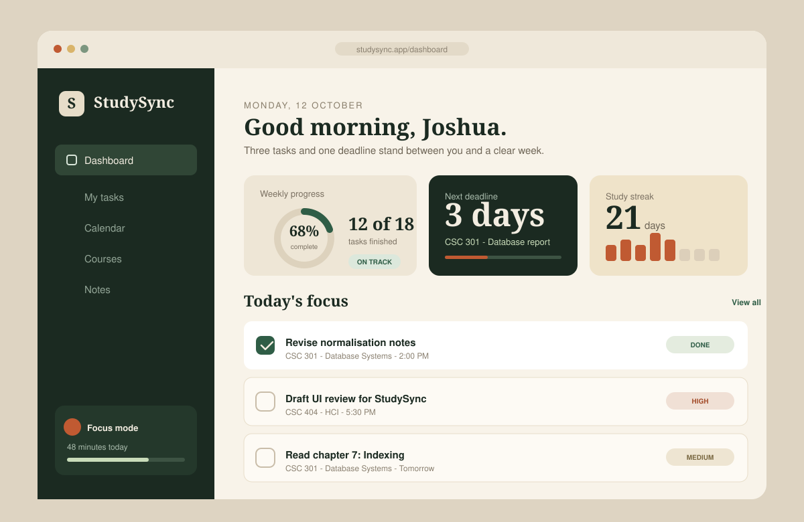

Featured project · 01
StudySync
A quieter way to plan a semester.
Most study planners try to do everything. StudySync does four things well: capture a task, give it a deadline, show what's overdue, and get out of the way. The goal was a planner that felt more like a calm desk than a project management dashboard.
- Create, complete, filter, and delete tasks without a page reload.
- Everything persists in localStorage, so a refresh never costs a thought.
- Keyboard-first controls, live announcements, and reduced-motion support.
- HTML5
- CSS Grid
- JavaScript
- localStorage